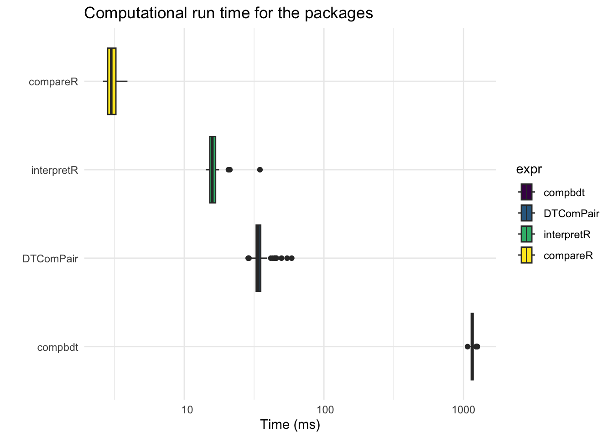
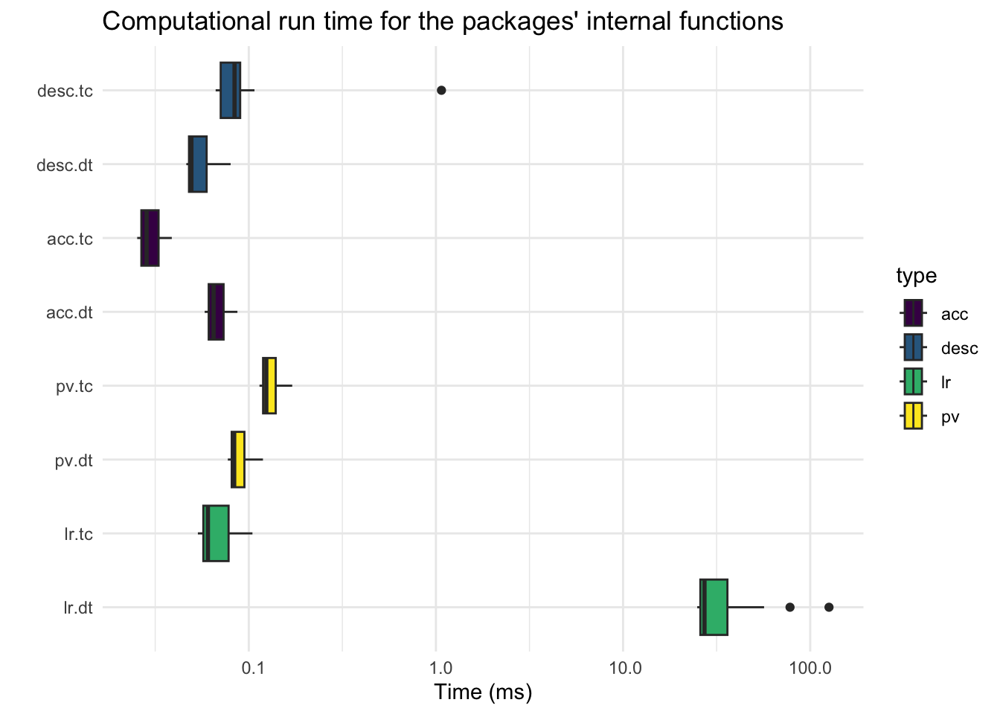
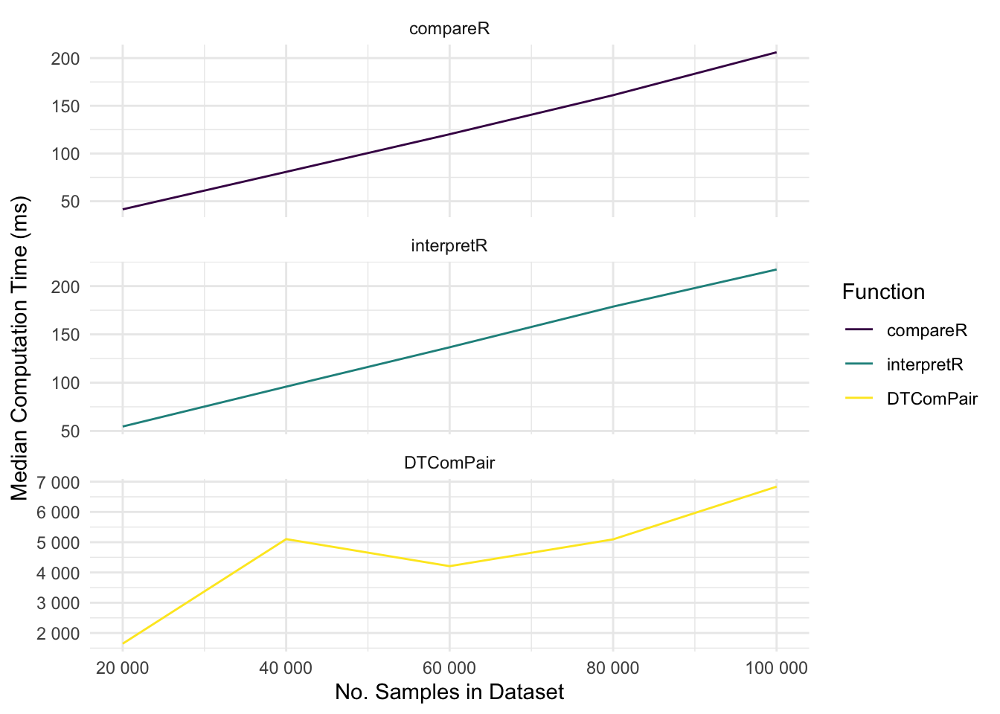

# install necessary packages
pkgs <- c("testCompareR", "DTComPair", "here", "microbenchmark", "dplyr",
"ggplot2", "viridis", "tidyr", "scales")
for (pkg in pkgs) {
if (!requireNamespace(pkg, quietly = TRUE)) {
install.packages(pkg)
}
}
sapply(pkgs, library, character.only = TRUE)
# source compbdt function
source(here("benchmarking/compbdtFunction.R"))Comparison of testCompareR, DTComPair and compbdt
Introduction
This script was used during testCompareR’s development to benchmark testCompareR against the only available R package, DTComPair, which performs a similar function, and its open-source predecessor, compbdt. The full manuscript has further details on the development, mathematical bases and use cases for testCompareR.
Preparing the data
While testCompareR can accept a data frame, matrix or tibble as its argument, both DTComPair and compbdt require the user to pre-process the data into the accepted format for their functions. To reproduce this script, it is necessary to load the compbdt function into memory. Here, that is achieved through source().
Now that we have loaded each of the packages / functions, we can run some sample data through each of them. The cass data is provided within the testCompareR package and here is restructured according to the requirements of each program.
# compute results for testCompareR
results <- compareR(cass, dp=10)
# create a function which mirrors the functionality of compareR() for DTComPair
DTComPair <- function(dat) {
dtc <- tab.paired(d = dat[,3], y1 = dat[,1], dat[,2])
return(list(
sum = acc.paired(dtc), # returns point estimates and CIs
acc = sesp.mcnemar(dtc), # compares diagnostic accuracies with McNemars
pv = pv.wgs(dtc), # compares PVs with weighted generalised score statistic
lr = dlr.regtest(dtc)) # compares LRs with regression model
)
}
# compute results for DTComPair
results.dt <- DTComPair(cass)
# pre-process data for compbdt using internal function from testCompareR
dat.compbdt <- testCompareR:::values.2test(cass)
# manually run compbdt and extract numbers (changed decip to 6 in function)
compbdt(dat.compbdt$s11, dat.compbdt$s10,
dat.compbdt$s01, dat.compbdt$s00,
dat.compbdt$r11, dat.compbdt$r10,
dat.compbdt$r01, dat.compbdt$r00)Next, we can create a large list containing all of the values which make up Table 4 in the testCompareR manuscript. This code is long and cumbersome, so is not produced in the Word document, but is available within the QMD file. At the end the list is output to benchmarking/comparison.rda.
Code
# calculate prevalence
dtc <- tab.paired(d = cass[,3], y1 = cass[,1], cass[,2])
prev <- matrix(rep(0, 20), ncol = 10)
prev[1,1] <- results$prev[1,1]
prev[1,2] <- results$prev[1,2]
prev[1,3] <- results$prev[1,3]
prev[1,4] <- results$prev[1,4]
prev[1,5] <- NA
prev[1,6] <- NA
prev[1,7] <- NA
prev[1,8] <- NA
prev[1,9] <- NA
prev[1,10] <- NA
prev[2,1] <- 69.805
prev[2,2] <- 1.556
prev[2,3] <- 66.681
prev[2,4] <- 72.768
prev[2,5] <- NA
prev[2,6] <- NA
prev[2,7] <- NA
prev[2,8] <- NA
prev[2,9] <- NA
prev[2,10] <- NA
prev <- round(prev, 3)
dimnames(prev) <- list(c("testCompareR", "compbdt"),
c("PLR","SE","LCI","UCI","p","NLR","SE","LCI","UCI","p"))
# test 1
test1.acc <- matrix(rep(0, 30), ncol = 10)
test1.acc[1,1] <- results$acc$accuracies[[1]][1,1]
test1.acc[1,2] <- results$acc$accuracies[[1]][1,2]
test1.acc[1,3] <- results$acc$accuracies[[1]][1,3]
test1.acc[1,4] <- results$acc$accuracies[[1]][1,4]
test1.acc[1,5] <- results$acc$sens.p.value
test1.acc[1,6] <- results$acc$accuracies[[1]][2,1]
test1.acc[1,7] <- results$acc$accuracies[[1]][2,2]
test1.acc[1,8] <- results$acc$accuracies[[1]][2,3]
test1.acc[1,9] <- results$acc$accuracies[[1]][2,4]
test1.acc[1,10] <- results$acc$spec.p.value
test1.acc[2,1] <- results.dt$sum$Test1$sensitivity[1]*100
test1.acc[2,2] <- results.dt$sum$Test1$sensitivity[2]*100
test1.acc[2,3] <- results.dt$sum$Test1$sensitivity[3]*100
test1.acc[2,4] <- results.dt$sum$Test1$sensitivity[4]*100
test1.acc[2,5] <- results.dt$acc$sensitivity[5]
test1.acc[2,6] <- results.dt$sum$Test1$specificity[1]*100
test1.acc[2,7] <- results.dt$sum$Test1$specificity[2]*100
test1.acc[2,8] <- results.dt$sum$Test1$specificity[3]*100
test1.acc[2,9] <- results.dt$sum$Test1$specificity[4]*100
test1.acc[2,10] <- results.dt$acc$specificity[5]
test1.acc[3,1] <- 82.566
test1.acc[3,2] <- 1.539
test1.acc[3,3] <- 79.363
test1.acc[3,4] <- 85.389
test1.acc[3,5] <- 0
test1.acc[3,6] <- 74.144
test1.acc[3,7] <- 2.7
test1.acc[3,8] <- 68.577
test1.acc[3,9] <- 79.087
test1.acc[3,10] <- 0.991
test1.acc <- round(test1.acc, 3)
dimnames(test1.acc) <- list(c("testCompareR", "DTComPair", "compbdt"),
c("Se","SE","LCI","UCI","p","Sp","SE","LCI","UCI","p")
)
# test 2
test2.acc <- matrix(rep(0, 30), ncol = 10)
test2.acc[1,1] <- results$acc$accuracies[[2]][1,1]
test2.acc[1,2] <- results$acc$accuracies[[2]][1,2]
test2.acc[1,3] <- results$acc$accuracies[[2]][1,3]
test2.acc[1,4] <- results$acc$accuracies[[2]][1,4]
test2.acc[1,5] <- NA
test2.acc[1,6] <- results$acc$accuracies[[2]][2,1]
test2.acc[1,7] <- results$acc$accuracies[[2]][2,2]
test2.acc[1,8] <- results$acc$accuracies[[2]][2,3]
test2.acc[1,9] <- results$acc$accuracies[[2]][2,4]
test2.acc[1,10] <- NA
test2.acc[2,1] <- results.dt$sum$Test2$sensitivity[1]*100
test2.acc[2,2] <- results.dt$sum$Test2$sensitivity[2]*100
test2.acc[2,3] <- results.dt$sum$Test2$sensitivity[3]*100
test2.acc[2,4] <- results.dt$sum$Test2$sensitivity[4]*100
test2.acc[2,5] <- NA
test2.acc[2,6] <- results.dt$sum$Test2$specificity[1]*100
test2.acc[2,7] <- results.dt$sum$Test2$specificity[2]*100
test2.acc[2,8] <- results.dt$sum$Test2$specificity[3]*100
test2.acc[2,9] <- results.dt$sum$Test2$specificity[4]*100
test2.acc[2,10] <- NA
test2.acc[3,1] <- 91.118
test2.acc[3,2] <- 1.154
test2.acc[3,3] <- 88.610
test2.acc[3,4] <- 93.148
test2.acc[3,5] <- NA
test2.acc[3,6] <- 74.905
test2.acc[3,7] <- 2.673
test2.acc[3,8] <- 69.358
test2.acc[3,9] <- 79.787
test2.acc[3,10] <- NA
test2.acc <- round(test2.acc, 3)
dimnames(test2.acc) <- list(c("testCompareR", "DTComPair", "compbdt"),
c("Se","SE","LCI","UCI","p","Sp","SE","LCI","UCI","p")
)
# test 1
test1.pv <- matrix(rep(0, 30), ncol = 10)
test1.pv[1,1] <- results$pv$predictive.values[[1]][1,1]
test1.pv[1,2] <- results$pv$predictive.values[[1]][1,2]
test1.pv[1,3] <- results$pv$predictive.values[[1]][1,3]
test1.pv[1,4] <- results$pv$predictive.values[[1]][1,4]
test1.pv[1,5] <- results$pv$ppv.p.value
test1.pv[1,6] <- results$pv$predictive.values[[1]][2,1]
test1.pv[1,7] <- results$pv$predictive.values[[1]][2,2]
test1.pv[1,8] <- results$pv$predictive.values[[1]][2,3]
test1.pv[1,9] <- results$pv$predictive.values[[1]][2,4]
test1.pv[1,10] <- results$pv$npv.p.value
test1.pv[2,1] <- results.dt$sum$Test1$ppv[1]*100
test1.pv[2,2] <- results.dt$sum$Test1$ppv[2]*100
test1.pv[2,3] <- results.dt$sum$Test1$ppv[3]*100
test1.pv[2,4] <- results.dt$sum$Test1$ppv[4]*100
test1.pv[2,5] <- results.dt$pv$ppv[5]
test1.pv[2,6] <- results.dt$sum$Test1$npv[1]*100
test1.pv[2,7] <- results.dt$sum$Test1$npv[2]*100
test1.pv[2,8] <- results.dt$sum$Test1$npv[3]*100
test1.pv[2,9] <- results.dt$sum$Test1$npv[4]*100
test1.pv[2,10] <- results.dt$pv$npv[5]
test1.pv[3,1] <- 88.07
test1.pv[3,2] <- 1.358
test1.pv[3,3] <- 85.17
test1.pv[3,4] <- 90.498
test1.pv[3,5] <- 0.369
test1.pv[3,6] <- 64.784
test1.pv[3,7] <- 2.753
test1.pv[3,8] <- 59.246
test1.pv[3,9] <- 69.976
test1.pv[3,10] <- 0
test1.pv <- round(test1.pv, 3)
dimnames(test1.pv) <- list(c("testCompareR", "DTComPair", "compbdt"),
c("PPV","SE","LCI","UCI","p","NPV","SE","LCI","UCI","p")
)
# test 2
test2.pv <- matrix(rep(0, 30), ncol = 10)
test2.pv[1,1] <- results$pv$predictive.values[[2]][1,1]
test2.pv[1,2] <- results$pv$predictive.values[[2]][1,2]
test2.pv[1,3] <- results$pv$predictive.values[[2]][1,3]
test2.pv[1,4] <- results$pv$predictive.values[[2]][1,4]
test2.pv[1,5] <- NA
test2.pv[1,6] <- results$pv$predictive.values[[2]][2,1]
test2.pv[1,7] <- results$pv$predictive.values[[2]][2,2]
test2.pv[1,8] <- results$pv$predictive.values[[2]][2,3]
test2.pv[1,9] <- results$pv$predictive.values[[2]][2,4]
test2.pv[1,10] <- NA
test2.pv[2,1] <- results.dt$sum$Test2$ppv[1]*100
test2.pv[2,2] <- results.dt$sum$Test2$ppv[2]*100
test2.pv[2,3] <- results.dt$sum$Test2$ppv[3]*100
test2.pv[2,4] <- results.dt$sum$Test2$ppv[4]*100
test2.pv[2,5] <- NA
test2.pv[2,6] <- results.dt$sum$Test2$npv[1]*100
test2.pv[2,7] <- results.dt$sum$Test2$npv[2]*100
test2.pv[2,8] <- results.dt$sum$Test2$npv[3]*100
test2.pv[2,9] <- results.dt$sum$Test2$npv[4]*100
test2.pv[2,10] <- NA
test2.pv[3,1] <- 89.355
test2.pv[3,2] <- 1.239
test2.pv[3,3] <- 86.698
test2.pv[3,4] <- 91.562
test2.pv[3,5] <- NA
test2.pv[3,6] <- 78.468
test2.pv[3,7] <- 2.594
test2.pv[3,8] <- 73.024
test2.pv[3,9] <- 83.151
test2.pv[3,10] <- NA
test2.pv <- round(test2.pv, 3)
dimnames(test2.pv) <- list(c("testCompareR", "DTComPair", "compbdt"),
c("PPV","SE","LCI","UCI","p","NPV","SE","LCI","UCI","p")
)
# test 1
test1.lr <- matrix(rep(0, 30), ncol = 10)
test1.lr[1,1] <- results$lr$likelihood.ratios[[1]][1,1]
test1.lr[1,2] <- results$lr$likelihood.ratios[[1]][1,2]
test1.lr[1,3] <- results$lr$likelihood.ratios[[1]][1,3]
test1.lr[1,4] <- results$lr$likelihood.ratios[[1]][1,4]
test1.lr[1,5] <- results$lr$plr.p.value
test1.lr[1,6] <- results$lr$likelihood.ratios[[1]][2,1]
test1.lr[1,7] <- results$lr$likelihood.ratios[[1]][2,2]
test1.lr[1,8] <- results$lr$likelihood.ratios[[1]][2,3]
test1.lr[1,9] <- results$lr$likelihood.ratios[[1]][2,4]
test1.lr[1,10] <- results$lr$nlr.p.value
test1.lr[2,1] <- results.dt$sum$Test1$pdlr[1]
test1.lr[2,2] <- results.dt$sum$Test1$pdlr[2]
test1.lr[2,3] <- results.dt$sum$Test1$pdlr[3]
test1.lr[2,4] <- results.dt$sum$Test1$pdlr[4]
test1.lr[2,5] <- results.dt$lr$pdlr$p.value
test1.lr[2,6] <- results.dt$sum$Test1$ndlr[1]
test1.lr[2,7] <- results.dt$sum$Test1$ndlr[2]
test1.lr[2,8] <- results.dt$sum$Test1$ndlr[3]
test1.lr[2,9] <- results.dt$sum$Test1$ndlr[4]
test1.lr[2,10] <- results.dt$lr$ndlr$p.value
test1.lr[3,1] <- 3.193
test1.lr[3,2] <- 0.339
test1.lr[3,3] <- 2.61
test1.lr[3,4] <- 3.952
test1.lr[3,5] <- 0.369
test1.lr[3,6] <- 0.235
test1.lr[3,7] <- 0.023
test1.lr[3,8] <- 0.195
test1.lr[3,9] <- 0.283
test1.lr[3,10] <- 0
test1.lr <- round(test1.lr, 3)
dimnames(test1.lr) <- list(c("testCompareR", "DTComPair", "compbdt"),
c("PLR","SE","LCI","UCI","p","NLR","SE","LCI","UCI","p")
)
# test 2
test2.lr <- matrix(rep(0, 30), ncol = 10)
test2.lr[1,1] <- results$lr$likelihood.ratios[[2]][1,1]
test2.lr[1,2] <- results$lr$likelihood.ratios[[2]][1,2]
test2.lr[1,3] <- results$lr$likelihood.ratios[[2]][1,3]
test2.lr[1,4] <- results$lr$likelihood.ratios[[2]][1,4]
test2.lr[1,5] <- NA
test2.lr[1,6] <- results$lr$likelihood.ratios[[2]][2,1]
test2.lr[1,7] <- results$lr$likelihood.ratios[[2]][2,2]
test2.lr[1,8] <- results$lr$likelihood.ratios[[2]][2,3]
test2.lr[1,9] <- results$lr$likelihood.ratios[[2]][2,4]
test2.lr[1,10] <- NA
test2.lr[2,1] <- results.dt$sum$Test2$pdlr[1]
test2.lr[2,2] <- results.dt$sum$Test2$pdlr[2]
test2.lr[2,3] <- results.dt$sum$Test2$pdlr[3]
test2.lr[2,4] <- results.dt$sum$Test2$pdlr[4]
test2.lr[2,5] <- NA
test2.lr[2,6] <- results.dt$sum$Test2$ndlr[1]
test2.lr[2,7] <- results.dt$sum$Test2$ndlr[2]
test2.lr[2,8] <- results.dt$sum$Test2$ndlr[3]
test2.lr[2,9] <- results.dt$sum$Test2$ndlr[4]
test2.lr[2,10] <- NA
test2.lr[3,1] <- 3.631
test2.lr[3,2] <- 0.390
test2.lr[3,3] <- 2.962
test2.lr[3,4] <- 4.505
test2.lr[3,5] <- NA
test2.lr[3,6] <- 0.119
test2.lr[3,7] <- 0.016
test2.lr[3,8] <- 0.09
test2.lr[3,9] <- 0.153
test2.lr[3,10] <- NA
test2.lr <- round(test2.lr, 3)
dimnames(test2.lr) <- list(c("testCompareR", "DTComPair", "compbdt"),
c("PLR","SE","LCI","UCI","p","NLR","SE","LCI","UCI","p")
)
output <- list(`Prevalence` = round(prev, 2),
`Acc: Exercise Stress Test` = round(test1.acc, 2),
`Acc: History of Chest Pain` = round(test2.acc, 2),
`PV: Exercise Stress Test` = round(test1.pv, 2),
`PV: History of Chest Pain` = round(test2.pv, 2),
`LR: Exercise Stress Test` = round(test1.lr, 2),
`LR: History of Chest Pain` = round(test2.lr, 2))
save(output, file = here("benchmarking/results_comparison.rda"))Next, we can run the efficiency tests. I have run testCompareR from within a function wrapper, in case that offers marginal gains over DTComPair.
# pre-processing of data for separate package
dat.compareR <- cass
dat.DTComPair <- data.frame(cass$angio, cass$exercise, cass$cp)
dat.compbdt <- testCompareR:::values.2test(cass)
# run compareR from within a function to make similar to DTComPair
test <- function(dat) {
compareR(dat)
}
# run all functions from DTComPair to create similar readout to compareR
DTComPair <- function(dat) {
dtc <- tab.paired(d = dat[,3], y1 = dat[,1], dat[,2], data = dat)
acc.paired(dtc)
sesp.mcnemar(dtc)
pv.wgs(dtc)
dlr.regtest(dtc)
}
# calculate times for 1) compareR 2) compareR+interpretR 3) DTComPair 4) compbdt
efficiency <- microbenchmark(
compareR = test(dat.compareR),
interpretR = interpretR(test(dat.compareR)),
DTComPair = DTComPair(dat.DTComPair),
compbdt = compbdt(dat.compbdt$s11, dat.compbdt$s10,
dat.compbdt$s01, dat.compbdt$s00,
dat.compbdt$r11, dat.compbdt$r10,
dat.compbdt$r01, dat.compbdt$r00),
times = 100
)
save(efficiency, file = here("benchmarking/comparative_efficiencies.rda"))Now we want to investigate the reason DTComPair is slower than testCompareR.
# investigate efficiency of DTComPair
d <- as.vector(cass$angio)
y1 <- as.vector(cass$exercise)
y2 <- as.vector(cass$cp)
dtc <- tab.paired(d = d, y1 = y1, y2 = y2)
vals <- testCompareR:::values.2test(cass)
descriptive <- function(vals) {
testCompareR:::conf.prev(vals)
testCompareR:::conf.acc(vals)
testCompareR:::conf.pv(vals)
testCompareR:::conf.lr(vals)
}
# individual functions vs. internal functions
internal.efficiency <- microbenchmark(
desc.tc = descriptive(vals),
desc.dt = acc.paired(dtc),
acc.tc = testCompareR:::output.acc(vals),
acc.dt = sesp.mcnemar(dtc),
pv.tc = testCompareR:::output.pv(vals),
pv.dt = pv.wgs(dtc),
lr.tc = testCompareR:::output.lr(vals),
lr.dt = dlr.regtest(dtc),
times = 100
)
internal.efficiency <- internal.efficiency %>% arrange(expr)
internal.efficiency$type <- c(rep("desc", 200), rep("acc", 200), rep("pv", 200), rep("lr", 200))
save(internal.efficiency, file = here("benchmarking/internal_efficiencies.rda"))Here I have run the tests on a different machine to when I prepared the manuscript, but as the results are very similar and the specifications have been clearly described in the paper there is no need to update the figures or tables. Nevertheless, for demonstration purposes I show how the plots were generated.
load(here("benchmarking/comparative_efficiencies.rda"))
load(here("benchmarking/internal_efficiencies.rda"))
efficiency$expr <- factor(efficiency$expr,
levels = c("compbdt", "DTComPair", "interpretR",
"compareR"))
efficiency$time <- efficiency$time / 1000000
ggplot(efficiency, aes(x = time, y = expr, fill = expr)) +
geom_boxplot() +
theme_minimal() +
scale_fill_viridis(discrete = TRUE) +
scale_x_continuous(trans = "log10",
labels = function(x) format(x, scientific = FALSE)) +
labs(x = "Time (ms)", y = "",
title = "Computational run time for the packages")
internal.efficiency$expr <- factor(internal.efficiency$expr,
levels = c("lr.dt", "lr.tc", "pv.dt", "pv.tc",
"acc.dt", "acc.tc", "desc.dt", "desc.tc")
)
internal.efficiency$time <- internal.efficiency$time / 1000000
ggplot(internal.efficiency, aes(x = time, y = expr, fill = type)) +
geom_boxplot() +
theme_minimal() +
scale_fill_viridis(discrete = TRUE) +
scale_x_continuous(trans = "log10",
labels = function(x) format(x, scientific = FALSE)) +
labs(x = "Time (ms)", y = "",
title = "Computational run time for the packages' internal functions")
How efficiency changes with data size
To test the efficiency with different sized data sets I duplicated the a simulated data set to create progressively larger data sets. I scaled linearly, in order to see if the computational time also scales linearly.
It is not useful to run compbdt this many times, as it is already demonstrably slower and the pre-processing has to be handled by testCompareR anyway.
First, we can make a simulated data set using the internal dataframeR function. I want to create a small increase in sensitivity which costs a lot in terms of specificity.
dat <- testCompareR:::dataframeR(800,12,8,180,300,10,90,600)Next, we set up the efficiency testing.
dat.compareR <- dat
dat.compareR.list <- list()
for(n in c(10,20,30,40,50)) {
df <- do.call("rbind", replicate(n, dat.compareR, simplify = FALSE))
dat.compareR.list <- append(dat.compareR.list, list(df))
}
dat.DTComPair <- data.frame(dat$gold, dat$test1, dat$test2)
dat.DTComPair.list <- list()
for(n in c(10,20,30,40,50)) {
df <- do.call("rbind", replicate(n, dat.compareR, simplify = FALSE))
dat.DTComPair.list <- append(dat.DTComPair.list, list(df))
}Finally, we perform the efficiency testing. This is computationally intensive and will take some minutes to run.
efficiencies <- list()
for(i in 1:length(dat.compareR.list)) {
test <- function(dat) {
compareR(dat)
}
efficiency <- microbenchmark(
compareR = test(dat.compareR.list[[i]]),
interpretR = interpretR(test(dat.compareR.list[[i]])),
DTComPair = DTComPair(dat.DTComPair.list[[i]]),
times = 25)
efficiencies <- append(efficiencies, efficiency)
}
names(efficiencies) <- paste(names(efficiencies), c(1,1,2,2,3,3,4,4,5,5),
sep = "_")
save(efficiencies, file = here("benchmarking/scaled_efficiencies.rda"))Finally, we can plot the outcome.
load(here("benchmarking/scaled_efficiencies.rda"))
df <- as.data.frame(efficiencies)
df_long <- df %>%
pivot_longer(
cols = everything(),
names_to = c(".value", "iteration"),
names_pattern = "(expr|time)_(\\d+)"
)
df_long$iteration <- as.numeric(df_long$iteration) * nrow(dat) * 10
df_long <- df_long %>%
group_by(iteration, expr) %>%
mutate(
median_c = median(time) / 1e+6
)
ggplot(df_long, aes(x = iteration, y = median_c, group = expr, colour = expr)) +
geom_line() +
facet_wrap(~expr, scales = "free_y", nrow = 3) +
scale_color_viridis(discrete = TRUE) +
scale_x_continuous(labels = label_number(scale = 1)) +
scale_y_continuous(labels = label_number(scale = 1)) +
labs(x = "No. Samples in Dataset", y = "Median Computation Time (ms)", color = "Function") +
theme_minimal()
Conclusions
Here we have shown that testCompareR achieves comparable results to DTComPair and compbdt, that it performs more quickly, even when wrapped in the interpretR function and that computation time scales linearly with data size, outperforming DTComPair on large datasets.